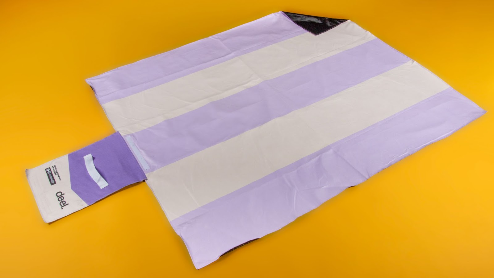

In the rapidly evolving tech landscape, few companies have experienced growth as explosive as Deel. As a global leader in payroll services, Deel enables companies to hire talent from anywhere in the world, a capability that has propelled it to unicorn status and set the stage for an upcoming IPO. This extraordinary growth is mirrored in the sheer number of events Deel hosts annually—over 400 to 500 events spanning every continent. These range from small customer gatherings to major exhibitions, making merchandise a key element in building brand loyalty and engagement.
Before partnering with Sunday, Deel faced significant challenges in managing their merchandise needs across these numerous events. With every event requiring a new set of merchandise, Deel found itself working with dozens of different suppliers each year, leading to a host of issues:
Deel event collection
To address these challenges, Deel partnered with Sunday to take a step back and reevaluate their entire merchandise process. Together, they implemented a centralized approach that streamlined operations, reduced costs, and ensured consistent quality across the globe.
Deel Merch Map
Sunday began by working closely with Deel to forecast their merchandise needs for a six-month period. By understanding the events planned and the expected demand, Sunday was able to produce merchandise in large batches, significantly reducing the per-unit cost. This centralized production approach not only ensured that Deel received premium items at a reduced cost but also eliminated the inefficiencies of dealing with multiple vendors.
One of Deel's key requirements was consistency. They wanted to offer the same high-quality, premium merchandise at every event, regardless of location. Sunday developed a comprehensive collection for Deel that included tennis socks, zipped hoodies, sweaters, T-shirts, picnic blankets, water bottles, and tea bottles—each item designed to resonate with Deel's brand identity. This collection was standardized across all regions, ensuring that whether an event was in EMEA, Latin America, the USA, or Asia, attendees would receive the same top-tier merchandise.
With centralized production, Sunday took on the responsibility of storing the merchandise and managing the complex logistics of global distribution. By handling customs, shipping, and last-mile delivery, Sunday ensured that the merchandise arrived just in time for each event, freeing Deel from the logistical burdens that had previously plagued their operations. This approach allowed Deel to focus on the events themselves, confident that the merchandise would be there when needed.
Sunday Wardrobe in action
Centralizing their merchandise strategy with Sunday led to substantial cost savings for Deel—over 40% reduction in product costs compared to their previous decentralized approach. By eliminating the need for urgent, last-minute orders and leveraging bulk production, Deel was able to optimize their budget without compromising on quality.
Deel team SKO merch
The success of the initial collaboration for events opened the door for further integration between Deel and Sunday. The partnership quickly expanded to include additional departments and initiatives:
Deel's rapid growth and global presence required a partner who could match their pace and scale. Sunday's ability to manage complex logistics, ensure consistent quality, and deliver substantial cost savings made them the ideal partner for Deel. With Sunday handling the intricacies of merchandise management, Deel was free to focus on what they do best—innovating and growing their global payroll service.
Deel branded Tea bottles, tennis socks, picnic blankets, laptop sleeves, totebags & caps
The centralized merchandise strategy implemented by Sunday has transformed how Deel manages its events and other marketing initiatives. The benefits are clear:
Deel's super popular tennis socks
As Deel continues its rapid growth trajectory, the partnership with Sunday will play a crucial role in maintaining and enhancing their brand presence worldwide. The long-term vision includes further integrating the merchandise strategy into Deel's broader marketing efforts, ensuring that every piece of branded merchandise contributes to building a strong, cohesive brand.
Deel Picnic Blanket
Deel Picnic Blanket
The ongoing success of this collaboration highlights the importance of a strategic, centralized approach to merchandise. For Deel, this partnership has not only optimized their event management but has also laid the foundation for a scalable, sustainable merchandise strategy that will support their continued growth and global reach.
Deel x Sunday college jacket for a partnership campaign
Deel's experience underscores the transformative power of centralizing merchandise management. In partnership with Sunday, Deel has turned what was once a logistical challenge into a strategic asset, enhancing brand love, reducing costs, and streamlining operations across the globe. As Deel looks to the future, this strategic approach to merchandise will continue to be a key factor in their success, both at their upcoming IPO and beyond.
Get in touch with our team to discuss how we can help you scale your event merchandise globally.
Looking to start dressing your team?
Want to discuss a project? Interested in
visiting one of our offices? Let us know!